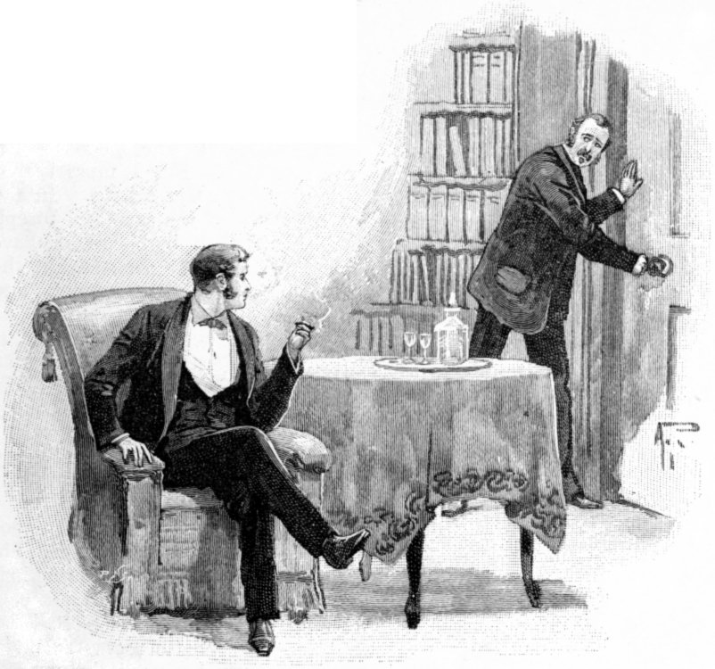

Stories from the Diary of a Doctor.
By the Authors of "THE MEDICINE LADY."
VII.—THE HORROR OF STUDLEY GRANGE.

"THE HORROR OF STUDLEY GRANGE."
I was in my consulting-room one morning, and had just said good-bye to the last of my patients, when my servant came in and told me that a lady had called who pressed very earnestly for an interview with me.
"I told her that you were just going out, sir," said the man, "and she saw the carriage at the door; but she begged to see you, if only for two minutes. This is her card."
I read the words, "Lady Studley."
"Show her in," I said, hastily, and the next moment a tall, slightly-made, fair-haired girl entered the room.
She looked very young, scarcely more than twenty, and I could hardly believe that she was, what her card indicated, a married woman.
The colour rushed into her cheeks as she held out her hand to me. I motioned her to a chair, and then asked her what I could do for her.
"Oh, you can help me," she said, clasping her hands and speaking in a slightly theatrical manner. "My husband, Sir Henry Studley, is very unwell, and I want you to come to see him—can you?—will you?"
"With pleasure," I replied. "Where do you live?"
"At Studley Grange, in Wiltshire. Don't you know our place?"
"I daresay I ought to know it," I replied, "although at the present moment I can't recall the name. You want me to come to see your husband. I presume you wish me to have a consultation with his medical attendant?"
"No, no, not at all. The fact is, Sir Henry has not got a medical attendant. He dislikes doctors, and won't see one. I want you to come and stay with us for a week or so. I have heard of you through mutual friends—the Onslows. I know you can effect remarkable cures, and you have a great deal of tact. But you can't possibly do anything for my husband unless you are willing to stay in the house and to notice his symptoms."
{kind=link}
Lady Studley spoke with great emphasis and earnestness. Her long, slender hands were clasped tightly together. She had drawn off her gloves and was bending forward in her chair. Her big, childish, and somewhat restless blue eyes were fixed imploringly on my face.
"I love my husband," she said, tears suddenly filling them—"and it is dreadful, dreadful, to see him suffer as he does. He will die unless someone comes to his aid. Oh, I know I am asking an immense thing, when I beg of you to leave all your patients and come to the country. But we can pay. Money is no object whatever to us. We can, we will, gladly pay you for your services."
"I must think the matter over," I said. "You flatter me by wishing for me, and by believing that I can render you assistance, but I cannot take a step of this kind in a hurry. I will write to you by to-night's post if you will give me your address. In the meantime, kindly tell me some of the symptoms of Sir Henry's malady."
"I fear it is a malady of the mind," she answered immediately, "but it is of so vivid and so startling a character, that unless relief is soon obtained, the body must give way under the strain. You see that I am very young, Dr. Halifax. Perhaps I look younger than I am—my age is twenty-two. My husband is twenty years my senior. He would, however, be considered by most people still a young man. He is a great scholar, and has always had more or less the habits of a recluse. He is fond of living in his library, and likes nothing better than to be surrounded by books of all sorts. Every modern book worth reading is forwarded to him by its publisher. He is a very interesting man and a brilliant conversationalist. Perhaps I ought to put all this in the past tense, for now he scarcely ever speaks—he reads next to nothing—it is difficult to persuade him to eat—he will not leave the house—he used to have a rather ruddy complexion—he is now deadly pale and terribly emaciated. He sighs in the most heartrending manner, and seems to be in a state of extreme nervous tension. In short, he is very ill, and yet he seems to have no bodily disease. His eyes have a terribly startled expression in them—his hand trembles so that he can scarcely raise a cup of tea to his lips. In short, he looks like a man who has seen a ghost."
"When did these symptoms begin to appear?" I asked.
"It is mid-winter now," said Lady Studley. "The queer symptoms began to show themselves in my husband in October. They have been growing worse and worse. In short, I can stand them no longer," she continued, giving way to a short, hysterical sob. "I felt I must come to someone—I have heard of you. Do, do come and save us. Do come and find out what is the matter with my wretched husband."
"I will write to you to-night," I said, in as kind a voice as I could muster, for the pretty, anxious wife interested me already. "It may not be possible for me to stay at Studley Grange for a week, but in any case I can promise to come and see the patient. One visit will probably be sufficient—what your husband wants is, no doubt, complete change."
"Oh, yes, yes," she replied, standing up now. "I have said so scores of times, but Sir Henry won't stir from Studley—nothing will induce him to go away. He won't even leave his own special bedroom, although I expect he has dreadful nights." Two hectic spots burnt in her cheeks as she spoke. I looked at her attentively.
"You will forgive me for speaking," I said, "but you do not look at all well yourself. I should like to prescribe for you as well as your husband."
"Thank you," she answered, "I am not very strong. I never have been, but that is nothing—I mean that my health is not a thing of consequence at present. Well, I must not take up any more of your time. I shall expect to get a letter from you to-morrow morning. Please address it to Lady Studley, Grosvenor Hotel, Victoria."
She touched my hand with fingers that burnt like a living coal and left the room.
I thought her very ill, and was sure that if I could see my way to spending a week at Studley Grange, I should have two patients instead of one. It is always difficult for a busy doctor to leave home, but after carefully thinking matters over, I resolved to comply with Lady Studley's request.
{kind=link}
Accordingly, two days later saw me on my way to Wiltshire, and to Studley Grange. A brougham with two smart horses was waiting at the station. To my surprise I saw that Lady Studley had come herself to fetch me.
"I don't know how to thank you," she said, giving me a feverish clasp of her hand. "Your visit fills me with hope—I believe that you will discover what is really wrong. Home!" she said, giving a quick, imperious direction to the footman who appeared at the window of the carriage.
We bowled forward at a rapid pace, and she continued:—
"I came to meet you to-day to tell you that I have used a little guile with regard to your visit. I have not told Sir Henry that you are coming here in the capacity of a doctor."
Here she paused and gave me one of her restless glances.
"Do you mind?" she asked.
"What have you said about me to Sir Henry?" I inquired.
"That you are a great friend of the Onslows, and that I have asked you here for a week's change," she answered immediately.
"As a guest, my husband will be polite and delightful to you—as a doctor, he would treat you with scant civility, and would probably give you little or none of his confidence."
I was quite silent for a moment after Lady Studley had told me this. Then I said:—
"Had I known that I was not to come to your house in the capacity of a medical man, I might have re-considered my earnest desire to help you."
She turned very pale when I said this, and tears filled her eyes.
"Never mind," I said now, for I could not but be touched by her extremely pathetic and suffering face, by the look of great illness which was manifested in every glance. "Never mind now; I am glad you have told me exactly the terms on which you wish me to approach your husband; but I think that I can so put matters to Sir Henry that he will be glad to consult me in my medical capacity."
"Oh, but he does not even know that I suspect his illness. It would never do for him to know. I suspect! I see! I fear! but I say nothing. Sir Henry would be much more miserable than he is now, if he thought that I guessed that there is anything wrong with him."
"It is impossible for me to come to the Grange except as a medical man," I answered, firmly. "I will tell Sir Henry that you have seen some changes in him, and have asked me to visit him as a doctor. Please trust me. Nothing will be said to your husband that can make matters at all uncomfortable for you."
Lady Studley did not venture any further remonstrance, and we now approached the old Grange. It was an irregular pile, built evidently according to the wants of the different families who had lived in it. The building was long and rambling, with rows of windows filled up with panes of latticed glass. In front of the house was a sweeping lawn, which, even at this time of the year, presented a velvety and well-kept appearance. We drove rapidly round to the entrance door, and a moment later I found myself in the presence of my host and patient. Sir Henry Studley was a tall man with a very slight stoop, and an aquiline and rather noble face. His eyes were dark, and his forehead inclined to be bald. There was a courtly, old-world sort of look about him. He greeted me with extreme friendliness, and we went into the hall, a very large and lofty apartment, to tea.
Lady Studley was vivacious and lively in the extreme. While she talked, the hectic spots came out again on her cheeks. My uneasiness about her increased as I noticed these symptoms. I felt certain that she was not only consumptive, but in all probability she was even now the victim of an advanced stage of phthisis. I felt far more anxious about her than about her husband, who appeared to me at that moment to be nothing more than a somewhat nervous and hypochondriacal person. This state of things seemed easy to account for in a scholar and a man of sedentary habits.
I remarked about the age of the house, and my host became interested, and told me one or two stories of the old inhabitants of the Grange. He said that to-morrow he would have much pleasure in taking me over the building.
{kind=link}
"Have you a ghost here?" I asked, with a laugh.
I don't know what prompted me to ask the question. The moment I did so, Sir Henry turned white to his lips, and Lady Studley held up a warning finger to me to intimate that I was on dangerous ground. I felt that I was, and hastened to divert the conversation into safer channels. Inadvertently I had touched on a sore spot. I scarcely regretted having done so, as the flash in the baronet's troubled eyes, and the extreme agitation of his face, showed me plainly that Lady Studley was right when she spoke of his nerves being in a very irritable condition. Of course, I did not believe in ghosts, and wondered that a man of Sir Henry's calibre could be at all under the influence of this old-world fear.
"I am sorry that we have no one to meet you," he said, after a few remarks of a commonplace character had divided us from the ghost question. "But to-morrow several friends are coming, and we hope you will have a pleasant time. Are you fond of hunting?"
I answered that I used to be in the old days, before medicine and patients occupied all my thoughts.
"If this open weather continues, I can probably give you some of your favourite pastime," rejoined Sir Henry; "and now perhaps you would like to be shown to your room."
My bedroom was in a modern wing of the house, and looked as cheerful and as unghostlike as it was possible for a room to be. I did not rejoin my host and hostess until dinner-time. We had a sociable little meal, at which nothing of any importance occurred, and shortly after the servants withdrew, Lady Studley left Sir Henry and me to ourselves. She gave me another warning glance as she left the room. I had already quite made up my mind, however, to tell Sir Henry the motive of my visit.
The moment the door closed behind his wife, he started up and asked me if I would mind coming with him into his library.
"The fact is." he said, "I am particularly glad you have come down. I want to have a talk with you about my wife. She is extremely unwell."
I signified my willingness to listen to anything Sir Henry might say, and in a few minutes we found ourselves comfortably established in a splendid old room, completely clothed with books from ceiling to floor.
"These are my treasures," said the baronet, waving his hand in the direction of an old bookcase, which contained, I saw at a glance, some very rare and precious first editions.
"These are my friends, the companions of my hours of solitude. Now sit down, Dr. Halifax; make yourself at home. You have come here as a guest, but I have heard of you before, and am inclined to confide in you. I must frankly say that I hate your profession as a rule. I don't believe in the omniscience of medical men, but moments come in the lives of all men when it is necessary to unburden the mind to another. May I give you my confidence?"
"One moment first," I said. "I can't deceive you, Sir Henry. I have come here, not in the capacity of a guest, but as your wife's medical man. She has been anxious about you, and she begged of me to come and stay here for a few days in order to render you any medical assistance within my power. I only knew, on my way here to-day, that she had not acquainted you with the nature of my visit."
While I was speaking, Sir Henry's face became extremely watchful, eager, and tense.
"This is remarkable," he said. "So Lucilla is anxious about me? I was not aware that I ever gave her the least clue to the fact that I am not—in perfect health. This is very strange—it troubles me."
He looked agitated. He placed one long, thin hand on the little table which stood near, and pouring out a glass of wine, drank it off. I noticed as he did so the nervous trembling of his hand. I glanced at his face, and saw that it was thin to emaciation.
"Well," he said, "I am obliged to you for being perfectly frank with me. My wife scarcely did well to conceal the object of your visit. But now that you have come, I shall make use of you both for myself and for her."
"Then you are not well?" I asked.
"Well!" he answered, with almost a shout. "Good God, no! I think that I am going mad. I know—I know that unless relief soon comes I shall die or become a raving maniac."
"No, nothing of the kind," I answered, soothingly; "you probably want change. This is a fine old house, but dull, no doubt, in winter. Why don't you go away?—to the Riviera, or some other place where there is plenty of sunshine? Why do you stay here? The air of this place is too damp to be good for either you or your wife."
Sir Henry sat silent for a moment, then he said, in a terse voice:—
"Perhaps you will advise me what to do after you know the nature of the malady which afflicts me. First of all, however, I wish to speak of my wife."
"I am ready to listen," I replied.
"You see," he continued, "that she is very delicate?"
"Yes," I replied; "to be frank with you, I should say that Lady Studley was consumptive."
He started when I said this, and pressed his lips firmly together. After a moment he spoke.
"You are right," he replied. "I had her examined by a medical man—Sir Joseph Dunbar—when I was last in London; he said her lungs were considerably affected, and that, in short, she was far from well."
"Did he not order you to winter abroad?"
"He did, but Lady Studley opposed the idea so strenuously that I was obliged to yield to her entreaties. Consumption does not seem to take quite the ordinary form with her. She is restless, she longs for cool air, she goes out on quite cold days, in a closed carriage, it is true. Still, except at night, she does not regard herself in any sense as an invalid. She has immense spirit—I think she will keep up until she dies."
"You speak of her being an invalid at night," I replied. "What are her symptoms?"
Sir Henry shuddered quite visibly.
"Oh, those awful nights!" he answered. "How happy would many poor mortals be, but for the terrible time of darkness. Lady Studley has had dreadful nights for some time: perspirations, cough, restlessness, bad dreams, and all the rest of it. But I must hasten to tell you my story quite briefly. In the beginning of October we saw Sir Joseph Dunbar. I should then, by his advice, have taken Lady Studley to the Riviera, but she opposed the idea with such passion and distress, that I abandoned it."
Sir Henry paused here, and I looked at him attentively. I remembered at that moment what Lady Studley had said about her husband refusing to leave the Grange under any circumstances. What a strange game of cross-purposes these two were playing. How was it possible for me to get at the truth?
"At my wife's earnest request," continued Sir Henry, "we returned to the Grange. She declared her firm intention of remaining here until she died.
"Soon after our return she suggested that we should occupy separate rooms at night, reminding me, when she made the request, of the infectious nature of consumption. I complied with her wish on condition that I slept in the room next hers, and that on the smallest emergency I should be summoned to her aid. This arrangement was made, and her room opens into mine. I have sometimes heard her moving about at night—I have often heard her cough, and I have often heard her sigh. But she has never once sent for me, or given me to understand that she required my aid. She does not think herself very ill, and nothing worries her more than to have her malady spoken about. That is the part of the story which relates to my wife."
"She is very ill," I said. "But I will speak of that presently. Now will you favour me with an account of your own symptoms, Sir Henry?"

"HE LOCKED THE DOOR AND PUT THE KEY IN HIS POCKET."
{kind=link}
He started again when I said this, and going across the room, locked the door and put the key in his pocket.
"Perhaps you will laugh at me," he said, "but it is no laughing matter, I assure you. The most terrible, the most awful affliction has come to me. In short, I am visited nightly by an appalling apparition. You don't believe in ghosts, I judge that by your face. Few scientific men do."
"Frankly, I do not," I replied. "So-called ghosts can generally be accounted for. At the most they are only the figments of an over-excited or diseased brain."
"Be that as it may," said Sir Henry, "the diseased brain can give such torture to its victim that death is preferable. All my life I have been what I consider a healthy minded man. I have plenty of money, and have never been troubled with the cares which torture men of commerce, or of small means. When I married, three years ago, I considered myself the most lucky and the happiest of mortals."
"Forgive a personal question," I interrupted. "Has your marriage disappointed you?"
"No, no; far from it," he replied with fervour. "I love my dear wife better and more deeply even than the day when I took her as a bride to my arms. It is true that I am weighed down with sorrow about her, but that is entirely owing to the state of her health."
"It is strange," I said, "that she should be weighed down with sorrow about you for the same cause. Have you told her of the thing which terrifies you?"
"Never, never. I have never spoken of it to mortal. It is remarkable that my wife should have told you that I looked like a man who has seen a ghost. Alas! alas! But let me tell you the cause of my shattered nerves, my agony, and failing health."
"Pray do, I shall listen attentively," I replied.
"Oh, doctor, that I could make you feel the horror of it!" said Sir Henry, bending forward and looking into my eyes. "Three months ago I no more believed in visitations, in apparitions, in so-called ghosts, than you do. Were you tried as I am, your scepticism would receive a severe shock. Now let me tell you what occurs. Night after night Lady Studley and I retire to rest at the same hour. We say good-night, and lay our heads on our separate pillows. The door of communication between us is shut. She has a night-light in her room—I prefer darkness. I close my eyes and prepare for slumber. As a rule I fall asleep. My sleep is of short duration. I awake with beads of perspiration standing on my forehead, with my heart thumping heavily and with every nerve wide awake, and waiting for the horror which will come. Sometimes I wait half an hour—sometimes longer. Then I know by a faint, ticking sound in the darkness that the Thing, for I can clothe it with no name, is about to visit me. In a certain spot of the room, always in the same spot, a bright light suddenly flashes; out of its midst there gleams a preternaturally large eye, which looks fixedly at me with a diabolical expression. As time goes, it does not remain long; but as agony counts, it seems to take years of my life away with it. It fades as suddenly into grey mist and nothingness as it comes, and, wet with perspiration, and struggling to keep back screams of mad terror, I bury my head in the bed-clothes."
"But have you never tried to investigate this thing?" I said.
"I did at first. The first night I saw it, I rushed out of bed and made for the spot. It disappeared at once. I struck a light—there was nothing whatever in the room."
"Why do you sleep in that room?"
"I must not go away from Lady Studley. My terror is that she should know anything of this—my greater terror is that the apparition, failing me, may visit her. I daresay you think I'm a fool, Halifax; but the fact is, this thing is killing me, brave man as I consider myself."
"Do you see it every night?" I asked.
{kind=link}
"Not quite every night, but sometimes on the same night it comes twice. Sometimes it will not come at all for two nights, or even three. It is the most ghastly, the most horrible form of torture that could hurry a sane man into his grave or into a madhouse."
"I have not the least shadow of doubt," I said, after a pause, "that the thing can be accounted for."
Sir Henry shook his head. "No, no," he replied, "it is either as you suggest, a figment of my own diseased brain, and therefore just as horrible as a real apparition; or it is a supernatural visitation. Whether it exists or not, it is reality to me and in no way a dream. The full horror of it is present with me in my waking moments."
"Do you think anyone is playing an awful practical joke?" I suggested.
"Certainly not. What object can anyone have in scaring me to death? Besides, there is no one in the room, that I can swear. My outer door is locked, Lady Studley's outer door is locked. It is impossible that there can be any trickery in the matter."
I said nothing for a moment. I no more believed in ghosts than I ever did, but I felt certain that there was grave mischief at work. Sir Henry must be the victim of a hallucination. This might only be caused by functional disturbance of the brain, but it was quite serious enough to call for immediate attention. The first thing to do was to find out whether the apparition could be accounted for in any material way, or if it were due to the state of Sir Henry's nerves. I began to ask him certain questions, going fully into the case in all its bearings. I then examined his eyes with the ophthalmoscope. The result of all this was to assure me beyond doubt that Sir Henry Studley was in a highly nervous condition, although I could detect no trace of brain disease.
"Do you mind taking me to your room?" I said.
"Not to-night," he answered. "It is late, and Lady Studley might express surprise. The object of my life is to conceal this horror from her. When she is out to-morrow you shall come to the room and judge for yourself."
"Well," I said, "I shall have an interview with your wife to-morrow, and urge her most strongly to consent to leave the Grange and go away with you."
Shortly afterwards we retired to rest, or what went by the name of rest in that sad house, with its troubled inmates. I must confess that, comfortable as my room was, I slept very little. Sir Henry's story stayed with me all through the hours of darkness. I am neither nervous nor imaginative, but I could not help seeing that terrible eye, even in my dreams.
I met my host and hostess at an early breakfast. Sir Henry proposed that as the day was warm and fine, I should ride to a neighbouring meet. I was not in the humour for this, however, and said frankly that I should prefer remaining at the Grange. One glance into the faces of my host and hostess told me only too plainly that I had two very serious patients on my hands. Lady Studley looked terribly weak and excited—the hectic spots on her cheeks, the gleaming glitter of her eyes, the parched lips, the long, white, emaciated hands, all showed only too plainly the strides the malady under which she was suffering was making.
"After all, I cannot urge that poor girl to go abroad," I said to myself. "She is hastening rapidly to her grave, and no power on earth can save her. She looks as if there were extensive disease of the lungs. How restless her eyes are, too! I would much rather testify to Sir Henry's sanity than to hers."
Sir Henry Studley also bore traces of a sleepless night—his face was bloodless; he averted his eyes from mine; he ate next to nothing.
Immediately after breakfast, I followed Lady Studley into her morning-room. I had already made up my mind how to act. Her husband should have my full confidence—she only my partial view of the situation.
"Well," I said, "I have seen your husband and talked to him. I hope he will soon be better. I don't think you need be seriously alarmed about him. Now for yourself, Lady Studley. I am anxious to examine your lungs. Will you allow me to do so?"
"I suppose Henry has told you I am consumptive?"
"He says you are not well," I answered. "I don't need his word to assure me of that fact—I can see it with my own eyes. Please let me examine your chest with my stethoscope."
She hesitated for a moment, looking something like a wild creature brought to bay. Then she sank into a chair, and with trembling fingers unfastened her dress. Poor soul, she was almost a walking skeleton—her beautiful face was all that was beautiful about her. A brief examination told me that she was in the last stage of phthisis—in short, that her days were numbered.
"What do you think of me?" she asked, when the brief examination was over.
"You are ill," I replied.
"How soon shall I die?"
"God only knows that, my dear lady," I answered.
"Oh, you needn't hide your thoughts," she said. "I know that my days are very few. Oh, if only, if only my husband could come with me! I am so afraid to go alone, and I am fond of him, very fond of him."
I soothed her as well as I could.
"You ought to have someone to sleep in your room at night," I said. "You ought not to be left by yourself."
"Henry is near me—in the next room," she replied. "I would not have a nurse for the world—I hate and detest nurses."
Soon afterwards she left me. She was very erratic, and before she left the room she had quite got over her depression. The sun shone out, and with the gleam of brightness her volatile spirits rose.
"I am going for a drive," she said. "Will you come with me?"
"Not this morning," I replied. "If you ask me to-morrow, I shall be pleased to accompany you."
"Well, go to Henry," she answered. "Talk to him—find out what ails him, order tonics for him. Cheer him in every way in your power. You say he is not ill—not seriously ill—I know better. My impression is that if my days are numbered, so are his."
She went away, and I sought her husband. As soon as the wheels of her brougham were heard bowling away over the gravel sweep, we went up together to his room.
"That eye came twice last night," he said in an awestruck whisper to me. "I am a doomed man—a doomed man. I cannot bear this any longer."
We were standing in the room as he said the words. Even in broad daylight, I could see that he glanced round him with apprehension. He was shaking quite visibly. The room was decidedly old-fashioned, but the greater part of the furniture was modern. The bed was an Albert one with a spring mattress, and light, cheerful dimity hangings. The windows were French—they were wide open, and let in the soft, pleasant air, for the day was truly a spring one in winter. The paper on the walls was light.
"This is a quaint old wardrobe," I said. "It looks out of place with the rest of the furniture. Why don't you have it removed?"
{kind=link}
"Hush," he said, with a gasp. "Don't go near it—I dread it, I have locked it. It is always in that direction that the apparition appears. The apparition seems to grow out of the glass of the wardrobe. It always appears in that one spot."
"I see," I answered. "The wardrobe is built into the wall. That is the reason it cannot be removed. Have you got the key about you?"
He fumbled in his pocket, and presently produced a bunch of keys.
"I wish you wouldn't open the wardrobe," he said. "I frankly admit that I dislike having it touched."
"All right," I replied. "I will not examine it while you are in the room. You will perhaps allow me to keep the key?"
"Certainly! You can take it from the bunch, if you wish. This is it. I shall be only too glad to have it well out of my own keeping."
"We will go downstairs," I said.
We returned to Sir Henry's library. It was my turn now to lock the door.
"Why do you do that?" he asked.
"Because I wish to be quite certain that no one overhears our conversation."
"What have you got to say?"
"I have a plan to propose to you."
"What is it?"
"I want you to change bedrooms with me to-night."
"What can you mean?—what will Lady Studley say?"
"Lady Studley must know nothing whatever about the arrangement. I think it very likely that the apparition which troubles you will be discovered to have a material foundation. In short, I am determined to get to the bottom of this horror. You have seen it often, and your nerves are much shattered. I have never seen it, and my nerves are, I think, in tolerable order. If I sleep in your room to-night—"
"It may not visit you."
"It may not, but on the other hand it may. I have a curiosity to lie on that bed and to face that wardrobe in the wall. You must yield to my wishes, Sir Henry."
"But how can the knowledge of this arrangement be kept from my wife?"
"Easily enough. You will both go to your rooms as usual. You will bid her good-night as usual, and after the doors of communication are closed I will enter the room and you will go to mine, or to any other that you like to occupy. You say your wife never comes into your room during the hours of the night?"
"She has never yet done so."
"She will not to-night. Should she by any chance call for assistance, I will immediately summon you."
It was very evident that Sir Henry did not like this arrangement. He yielded, however, to my very strong persuasions, which almost took the form of commands, for I saw that I could do nothing unless I got complete mastery over the man.
Lady Studley returned from her drive just as our arrangements were fully made. I had not a moment during all the day to examine the interior of the wardrobe. The sick woman's restlessness grew greater as the hours advanced. She did not care to leave her husband's side. She sat with him as he examined his books. She followed him from room to room. In the afternoon, to the relief of everyone, some fresh guests arrived. In consequence we had a cheerful evening. Lady Studley came down to dinner in white from top to toe. Her dress was ethereal in texture and largely composed of lace. I cannot describe woman's dress, but with her shadowy figure and worn, but still lovely face, she looked spiritual. The gleam in her large blue eyes was pathetic. Her love for her husband was touching to behold. How soon, how very soon, they must part from each other! Only I as a doctor knew how impossible it was to keep the lamp of life much longer burning in the poor girl's frame.
We retired as usual to rest. Sir Henry bade me a cheerful good-night. Lady Studley nodded to me as she left the room.
{kind=link}
"Sleep well," she said, in a gay voice.
It was late the next morning when we all met round the breakfast table. Sir Henry looked better, but Lady Studley many degrees worse, than the night before. I wondered at her courage in retaining her post at the head of her table. The visitors, who came in at intervals and took their seats at the table, looked at her with wonder and compassion.
"Surely my hostess is very ill?" said a guest who sat next my side.
"Yes, but take no notice of it," I answered.
Soon after breakfast I sought Sir Henry.
"Well—well?" he said, as he grasped my hand. "Halifax, you have seen it. I know you have by the expression of your face."
"Yes," I replied, "I have."
"How quietly you speak. Has not the horror of the thing seized you?"
"No," I said, with a brief laugh. "I told you yesterday that my nerves were in tolerable order. I think my surmise was correct, and that the apparition has tangible form and can be traced to its foundation."
An unbelieving look swept over Sir Henry's face.
"Ah," he said, "doctors are very hard to convince. Everything must be brought down to a cold material level to satisfy them; but several nights in that room would shatter even your nerves, my friend."
"You are quite right," I answered. "I should be very sorry to spend several nights in that room. Now I will tell you briefly what occurred."
We were standing in the library. Sir Henry went to the door, locked it, and put the key in his pocket.
"Can I come in?" said a voice outside.
The voice was Lady Studley's.
"In a minute, my darling," answered her husband. "I am engaged with Halifax just at present."
"Medically, I suppose?" she answered.
"Yes, medically," he responded.
She went away at once, and Sir Henry returned to my side.
"Now speak," he said. "Be quick. She is sure to return, and I don't like her to fancy that we are talking secrets."
"This is my story," I said. "I went into your room, put out all the lights, and sat on the edge of the bed."
"You did not get into bed, then?"
"No, I preferred to be up and to be ready for immediate action should the apparition, the horror, or whatever you call it, appear."
"Good God, it is a horror, Halifax!"
"It is, Sir Henry. A more diabolical contrivance for frightening a man into his grave could scarcely have been contrived. I can comfort you on one point, however. The terrible thing you saw is not a figment of your brain. There is no likelihood of a lunatic asylum in your case. Someone is playing you a trick."
"I cannot agree with you—but proceed," said the baronet, impatiently.
"I sat for about an hour on the edge of the bed," I continued. "When I entered the room it was twelve o'clock—one had sounded before there was the least stir or appearance of anything, then the ticking noise you have described was distinctly audible. This was followed by a sudden bright light, which seemed to proceed out of the recesses of the wardrobe."
"What did you feel when you saw that light?"
"Too excited to be nervous," I answered, briefly. "Out of the circle of light the horrible eye looked at me."
"What did you do then? Did you faint?"
"No, I went noiselessly across the carpet up to the door of the wardrobe and looked in."
"Heavens! you are daring. I wonder you are alive to tell this tale."
"I saw a shadowy form," I replied—"dark and tall—the one brilliant eye kept on looking past me, straight into the room. I made a very slight noise; it immediately disappeared. I waited for some time—nothing more happened. I got into your bed, Sir Henry, and slept. I can't say that I had a comfortable night, but I slept, and was not disturbed by anything extraordinary for the remaining hours of the night."
"Now what do you mean to do? You say you can trace this thing to its foundation. It seems to me that all you have seen only supports my firm belief that a horrible apparition visits that room."
"A material one," I responded. "The shadowy form had substance, of that I am convinced. Sir Henry, I intend to sleep in that room again to-night."
"Lady Studley will find out."
"She will not. I sleep in the haunted room again to-night, and during the day you must so contrive matters that I have plenty of time to examine the wardrobe. I did not do so yesterday because I had not an opportunity. You must contrive to get Lady Studley out of the way, either this morning or afternoon, and so manage matters for me that I can be some little time alone in your room."
"Henry, Henry, how awestruck you look!" said a gay voice at the window. Lady Studley had come out, had come round to the library window, and, holding up her long, dark-blue velvet dress, was looking at us with a peculiar smile.
"Well, my love," replied the baronet. He went to the window and flung it open. "Lucilla," he exclaimed, "you are mad to stand on the damp grass."
"Oh, no, not mad," she answered. "I have come to that stage when nothing matters. Is not that so, Dr. Halifax?"
"You are very imprudent," I replied.
She shook her finger at me playfully, and turned to her husband.
"Henry," she said, "have you taken my keys? I cannot find them anywhere."
"I will go up and look for them," said Sir Henry. He left the room, and Lady Studley entered the library through one of the French windows.
"What do you think of my husband this morning?" she asked.
"He is a little better," I replied. "I am confident that he will soon be quite well again."
She gave a deep sigh when I said this, her lips trembled, and she turned away. I thought my news would make her happy, and her depression surprised me.
At this moment Sir Henry came into the room.
"Here are your keys," he said to his wife. He gave her the same bunch he had given me the night before. I hoped she would not notice that the key of the wardrobe was missing.
"And now I want you to come for a drive with me," said Sir Henry.
He did not often accompany her, and the pleasure of this unlooked-for indulgence evidently tempted her.
"Very well," she answered. "Is Dr. Halifax coming?"
"No, he wants to have a ride."
"If he rides, can he not follow the carriage?"
"Will you do that, Halifax?" asked my host.
"No, thank you," I answered; "I must write some letters before I go anywhere. I will ride to the nearest town and post them presently, if I may." I left the room as I spoke.
Shortly afterwards I saw from a window Sir Henry and his wife drive away. They drove in a large open landau, and two girls who were staying in the house accompanied them. My hour had come, and I went up at once to Sir Henry's bedroom. Lady Studley's room opened directly into that of her husband, but both rooms had separate entrances.
I locked the two outer doors now, and then began my investigations. I had the key of the wardrobe in my pocket.
{kind=link}
It was troublesome to unlock, because the key was a little rusty, and it was more than evident that the heavy doors had not been opened for some time. Both these doors were made of glass. When shut, they resembled in shape and appearance an ordinary old-fashioned window. The glass was set in deep mullions. It was thick, was of a peculiar shade of light blue, and was evidently of great antiquity. I opened the doors and went inside. The wardrobe was so roomy that I could stand upright with perfect comfort. It was empty, and was lined through and through with solid oak. I struck a light and began to examine the interior with care. After a great deal of patient investigation I came across a notch in the wood. I pressed my finger on this, and immediately a little panel slid back, which revealed underneath a small button. I turned the button and a door at the back of the wardrobe flew open. A flood of sunlight poured in, and stepping out, I found myself in another room. I looked around me in astonishment. This was a lady's chamber. Good heavens! what had happened? I was in Lady Studley's room. Shutting the mysterious door of the wardrobe very carefully, I found that all trace of its existence immediately vanished.
There was no furniture against this part of the wall. It looked absolutely bare and smooth. No picture ornamented it. The light paper which covered it gave the appearance of a perfectly unbroken pattern. Of course, there must be a concealed spring somewhere, and I lost no time in feeling for it. I pressed my hand and the tips of my fingers in every direction along the wall. Try as I would, however, I could not find the spring, and I had at last to leave Lady Studley's room and go back to the one occupied by her husband, by the ordinary door.
Once more I re-entered the wardrobe and deliberately broke off the button which opened the secret door from within. Anyone who now entered the wardrobe by this door, and shut it behind him, would find it impossible to retreat. The apparition, if it had material foundation, would thus find itself trapped in its own net.
What could this thing portend?
I had already convinced myself that if Sir Henry were the subject of a hallucination, I also shared it. As this was impossible, I felt certain that the apparition had a material foundation. Who was the person who glided night after night into Lady Studley's room, who knew the trick of the secret spring in the wall, who entered the old wardrobe, and performed this ghastly, this appalling trick on Sir Henry Studley? I resolved that I would say nothing to Sir Henry of my fresh discovery until after I had spent another night in the haunted room.
Accordingly, I slipped the key of the wardrobe once more into my pocket and went downstairs.
I had my way again that night. Once more I found myself the sole occupant of the haunted room. I put out the light, sat on the edge of the bed, and waited the issue of events. At first there was silence and complete darkness, but soon after one o'clock I heard the very slight but unmistakable tick-tick, which told me that the apparition was about to appear. The ticking noise resembled the quaint sound made by the death spider. There was no other noise of any sort, but a quickening of my pulses, a sensation which I could not call fear, but which was exciting to the point of pain, braced me up for an unusual and horrible sight. The light appeared in the dim recess of the wardrobe. It grew clear and steady, and quickly resolved itself into one intensely bright circle. Out of this circle the eye looked at me. The eye was unnaturally large—it was clear, almost transparent, its expression was full of menace and warning. Into the circle of light presently a shadowy and ethereal hand intruded itself. The fingers beckoned me to approach, while the eye looked fixedly at me. I sat motionless on the side of the bed. I am stoical by nature and my nerves are well seasoned, but I am not ashamed to say that I should be very sorry to be often subjected to that menace and that invitation. The look in that eye, the beckoning power in those long, shadowy fingers would soon work havoc even in the stoutest nerves. My heart beat uncomfortably fast, and I had to say over and over to myself, "This is nothing more than a ghastly trick." I had also to remind myself that I in my turn had prepared a trap for the apparition. The time while the eye looked and the hand beckoned might in reality have been counted by seconds; to me it seemed like eternity. I felt the cold dew on my forehead before the rapidly waning light assured me that the apparition was about to vanish. Making an effort I now left the bed and approached the wardrobe. I listened intently. For a moment there was perfect silence. Then a fumbling noise was distinctly audible. It was followed by a muffled cry, a crash, and a heavy fall. I struck a light instantly, and taking the key of the wardrobe from my pocket, opened it. Never shall I forget the sight that met my gaze.
There, huddled up on the floor, lay the prostrate and unconscious form of Lady Studley. A black cloak in which she had wrapped herself partly covered her face, but I knew her by her long, fair hair. I pulled back the cloak, and saw that the unhappy girl had broken a blood-vessel, and even as I lifted her up I knew that she was in a dying condition.
I carried her at once into her own room and laid her on the bed. I then returned and shut the wardrobe door, and slipped the key into my pocket. My next deed was to summon Sir Henry.
"What is it?" he asked, springing upright in bed.
"Come at once," I said, "your wife is very ill."
"Dying?" he asked, in an agonized whisper.
I nodded my head. I could not speak.
My one effort now was to keep the knowledge of the ghastly discovery I had made from the unhappy husband.
He followed me to his wife's room. He forgot even to question me about the apparition, so horrified was he at the sight which met his view.
I administered restoratives to the dying woman, and did what I could to check the haemorrhage. After a time Lady Studley opened her dim eyes.
"Oh, Henry!" she said, stretching out a feeble hand to him, "come with me, come with me. I am afraid to go alone."
"My poor Lucilla," he said. He smoothed her cold forehead, and tried to comfort her by every means in his power.
After a time he left the room. When he did so she beckoned me to approach. "I have failed," she said, in the most thrilling voice of horror I have ever listened to. "I must go alone. He will not come with me."
"What do you mean?" I asked.
She could scarcely speak, but at intervals the following words dropped slowly from her lips:—
"I was the apparition. I did not want my husband to live after me. Perhaps I was a little insane. I cannot quite say. When I was told by Sir Joseph Dunbar that there was no hope of my life, a most appalling and frightful jealousy took possession of me. I pictured my husband with another wife. Stoop down."
Her voice was very faint. I could scarcely hear her muttered words. Her eyes were glazing fast, death was claiming her, and yet hatred against some unknown person thrilled in her feeble voice.
"Before my husband married me, he loved another woman," she continued. "That woman is now a widow. I felt certain that immediately after my death he would seek her out and marry her. I could not bear the thought—it possessed me day and night. That, and the terror of dying alone, worked such a havoc within me that I believe I was scarcely responsible for my own actions. A mad desire took possession of me to take my husband with me, and so to keep him from her, and also to have his company when I passed the barriers of life. I told you that my brother was a doctor. In his medical-student days the sort of trick I have been playing on Sir Henry was enacted by some of his fellow-students for his benefit, and almost scared him into fever. One day my brother described the trick to me, and I asked him to show me how it was done. I used a small electric lamp and a very strong reflector."
"How did you find out the secret door of the wardrobe?" I asked.
"Quite by chance. I was putting some dresses into the wardrobe one day and accidentally touched the secret panel. I saw at once that here was my opportunity."
"You must have been alarmed at your success," I said, after a pause. "And now I have one more question to ask: Why did you summon me to the Grange?"
She made a faint, impatient movement.
"I wanted to be certain that my husband was really very ill," she said. "I wanted you to talk to him—I guessed he would confide in you; I thought it most probable that you would tell him that he was a victim of brain hallucinations. This would frighten him and would suit my purpose exactly. I also sent for you as a blind. I felt sure that under these circumstances neither you nor my husband could possibly suspect me."
She was silent again, panting from exhaustion.
"I have failed," she said, after a long pause. "You have discovered the truth. It never occurred to me for a moment that you would go into the room. He will recover now."
She paused; a fresh attack of haemorrhage came on. Her breath came quickly. Her end was very near. Her dim eyes could scarcely see.
Groping feebly with her hand she took mine.
"Dr. Halifax—promise."
"What?" I asked.
"I have failed, but let me keep his love, what little love he has for me, before he marries that other woman. Promise that you will never tell him."
"Rest easy," I answered, "I will never tell him."
Sir Henry entered the room.
I made way for him to kneel by his wife's side.
As the grey morning broke Lady Studley died.
Before my departure from the Grange I avoided Sir Henry as much as possible. Once he spoke of the apparition and asked if I had seen it. "Yes," I replied.
Before I could say anything further, he continued:—
"I know now why it came; it was to warn me of my unhappy wife's death." He said no more. I could not enlighten him, and he is unlikely now ever to learn the truth.
The following day I left Studley Grange. I took with me, without asking leave of any-one, a certain long black cloak, a small electric lamp, and a magnifying glass of considerable power.
It may be of interest to explain how Lady Studley in her unhealthy condition of mind and body performed the extraordinary trick by which she hoped to undermine her husband's health, and ultimately cause his death.
I experimented with the materials which I carried away with me, and succeeded, so my friends told me, in producing a most ghastly effect.
I did it in this way. I attached the mirror of a laryngoscope to my forehead in such a manner as to enable it to throw a strong reflection into one of my eyes. In the centre of the bright side of the laryngoscope a small electric lamp was fitted. This was connected with a battery which I carried in my hand. The battery was similar to those used by the ballet girls in Drury Lane Theatre, and could be brought into force by a touch and extinguished by the removal of the pressure. The eye which was thus brilliantly illumined looked through a lens of some power. All the rest of the face and figure was completely covered by the black cloak. Thus the brightest possible light was thrown on the magnified eye, while there was corresponding increased gloom around.
When last I heard of Studley Grange it was let for a term of years and Sir Henry had gone abroad. I have not heard that he has married again, but he probably will, sooner or later.